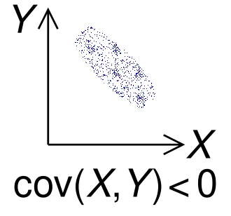
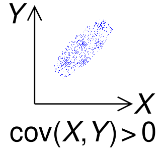
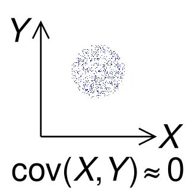

Variance measures the average of the squared distances from the
mean.
Standard deviation is
For a constant
,
5.1 Covariance
For random variables
,
,
Note that Variance is a specific case of Covariance, i.e.

and
move inversely.

and
move together.

No linear pattern.
For random variables
,
and constants
,
,
Proof.
The implication is that when
Cov,
.
For example, if portfolio has multiple stocks that tend to move
together (Cov), the combined portfolio is riskier. Conversely, the risk
decreases if negatively correlated stocks are held together.
5.1.1 Independence
By extension, if
and
are independent,
Cov.
Then,
However, zero Covariance does not imply independence.
For example, let random variable
take three values:
Let
.
We know that
is dependent on
.
Calculating covariance,
We have
.
Calculating
,
So
Therefore,
Takeaway: Covariance only tests for linear relationships. For
non-linear cases like
,
Covariance might be 0 even though the variables are dependent on each
other.
5.2 Variance-covariance matrix
5.3 Correlation coefficient
where
and
,
the standard deviations of
and
,
are the normalisation factor.
Thus, we have
,
by Cauchy-Schwarz inequality.
For example, two random variables
and
have the strongest linear relationship when
.
Then
The correlation coefficient is
5.4 Change of Variables
5.4.1 PMF (Discrete case)
Let
be a random variable with PMF
.
Let
.
Then the PMF of
is obtained by summing up all the original
values that transform into that
.
Examples:
5.4.2 PDFs (Continuous case, single
variable)
Define random variables
and
,
where
is continuously differentiable and one-to-one.
Then the PDFs
and
satisfy
here is the scaling factor.
Proof. By definition, the Cumulative Distribution Function
(CDF) is
Case 1:
is strictly increasing.
The inequality is preserved:
So, we have the identity
To obtain the PDF, we differentiate both sides with respect to
.
On the right side, we apply the Chain Rule:
Since
is increasing,
,
so this matches our formula.
Case 2: If
were strictly decreasing, the inequality would flip
(),
leading to a negative sign.
To cover both cases, we take the absolute value of the derivative:
Intuitive explanation.
In a PDF, since probability is area, the probability mass in a tiny
interval of
must equal the probability mass in the corresponding interval of
.
The relationship between the interval widths
(
vs
)
is determined by the derivative (the slope of the transformation):
Substitute
back into the area equation:
To ensure the density is
positive (even if
is decreasing), we take the absolute value of the derivative:
Example.
.
5.4.3 PDFs (Continuous case,
multiple variables)
Let
be
continuous random variables, transformed to
new random variables
using a set of functions
We then have a Jacobian matrix of size
.
Each row
tells us how each output
changes as any of the inputs
change. While in single variable calculus, the derivative is just a
single number (the slope), for multivariable calculus, the Jacobian
matrix is the collection of all the slopes at once.
Then, the Jacobian determinant replaces
in the 1D case. It tells us how much the volume is
transformed.
The joint PDFs
and
satisfy
where
represents the absolute value of the determinant of the
Jacobian matrix. This number represents the volume scaling factor of the
transformation in
-dimensional
space.
In vector notation, with
,
,
,
In terms of
,
Example.
.
5.4.4 Gaussian distribution -
Change of variable
Let
follow the Gaussian distribution
,
Change of variable:
.
Then,
Takeaway: If we apply a linear transformation to a Gaussian random
variable, the result is also a Gaussian distribution.
The new mean
():
The center of the curve moves as expected according to
and
.
The new variance
():
The spread is increased by the square of the multiplier.
Note that the variance is not affected by the shift
().
5.4.5 Multivariate Gaussian
distribution - Change of variable
Let
and
independently follow the standard Gaussian distribution
.
The joint PDF of
()
is
Generalising to
-variate
standard Gaussian distribution
,
Here,
.
Also, the covariance matrix
, meaning the variance of
each variable is 1, and there is zero covariance between any of the
variables.
Letting
follow
,
we apply a change of variables
,
where
.
is basically a vector of
numbers.
To find the PDF of
,
apply the change of variables formula:
Since
Substituting in, we get
Defining the new covariance matrix as
,
we have
and
Finally, we get
Comparing to the d-variate standard Gaussian
distribution
,
the d-variate Gaussian distribution
is
,
where
and
is the variance-covariance matrix.
5.5 Moments
For a random variable
,
the
-th
momemnt is
Each subsequent moment provides more information about the structure of
the distribution.
For example,
The first moment tells us about the mean, the second moment tells us
about the variance,
The third moment tells us about skewness, the fourth tells us about
kurtosis, and so on.
A probability distribution is uniquely specified by its moment
generating function (MGF). Note: It is not uniquely specified by its
moments.
The moment generating function (MGF) is
We use
because from the taylor expansion of
,
Taking expectation,
Therefore, by taking the
-th
derivative,
and setting
,
we get the moments
5.5.1 Example for Gaussian
distribution
For a Standard Normal Distribution
(),
the MGF is defined as
We complete the square in the exponent:
.
Substituting this back into the integral:
The integral is equal to 1
because it represents the total probability of a Normal distribution
with mean
and variance
.
Thus:
Then for a General Normal Distribution
(),
We use the linear transformation property
:
Using the result
from Part 1 with
:
The Gaussian distribution
is characterised by only the mean and variance.
5.6 Poisson distribution
The Poisson distribution models the number of events occuring in some
fixed interval (of time or space), given a constant average rate
,
independence of events.
For a random variable
that follow a Poisson distribution, we write
The Poisson distribution is basically a limit of the Binomial
distribution
.
Recall that for
,
Consider some time interval
[]
divided into
tiny parts. Some event occurs on average
times in
[].
The probability of the event occuring in each of the
parts is roughly
.
If
is sufficiently large, each part can have at most one event.
Taking limit of the Binomial distribution as
,
We get
This is the probability that some event occurs
times in
[],
given that it occurs
times on average in
[].
The MGF for some Poisson distribution is
Taking first and second derivatives of
and setting
,
Then
Poisson distribution’s mean and variance are both
.